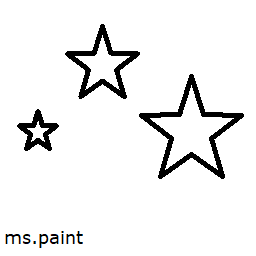

Мене звати Олексій, я студент комп'ютерних наук із групи 301-ТН.
Люблю слухати музику, розв'язувати головоломки (частіше за все словесні, наприклад Connections), працювати з операційними системами. Час від часу люблю створювати програми.
func (c *LobbyClient) Disconnect() {
if c.conn != nil {
c.conn.Close()
}
c.Connected = false
}